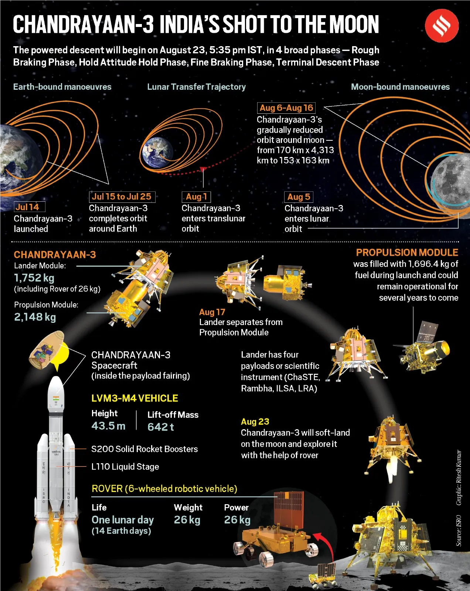
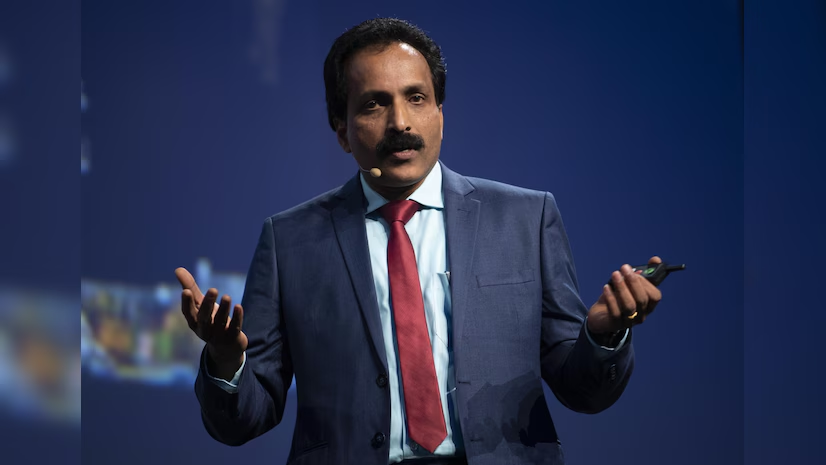
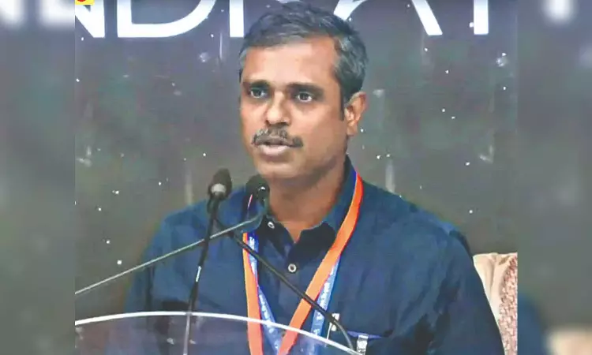
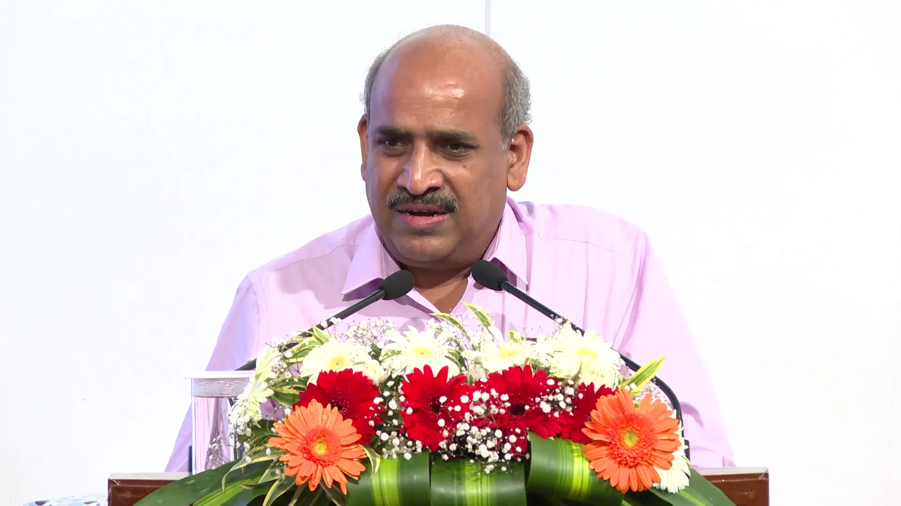
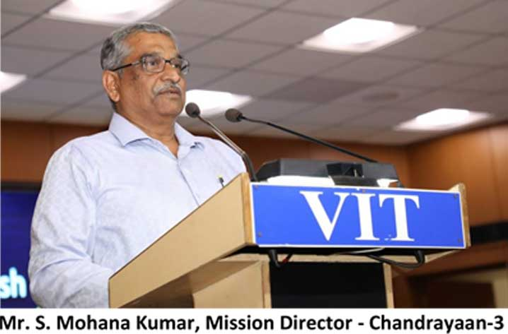
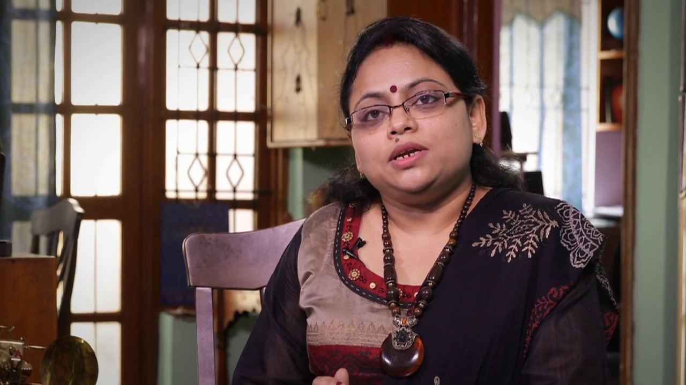
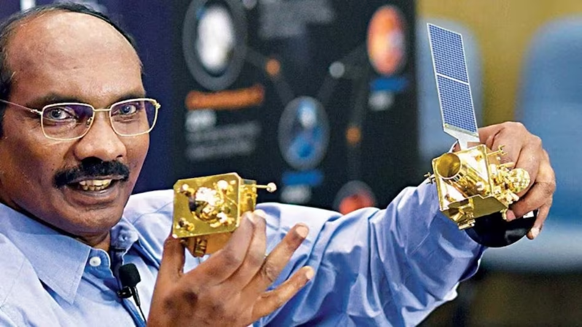

Soft Landing
Achieve a precise and safe descent onto the lunar surface, carrying the Vikram lander and Pragyan rover.
SECURE MISSION ARCHIVE
Mission Archive
Authenticate to enter the Chandrayaan-3 mission archive.
ISRO / LUNAR EXPLORATION MISSION
Explore the mission that made history and carried India's lunar ambitions to the south pole.
01 / THE MISSION
Chandrayaan-3 is India's third lunar exploration endeavor, following Chandrayaan-1 and Chandrayaan-2. Its primary objective was to achieve a soft landing on the Moon and explore the lunar south pole with a lander and rover.
Achieve a precise and safe descent onto the lunar surface, carrying the Vikram lander and Pragyan rover.
Reach a region of the Moon with permanently shadowed craters and potential water ice deposits.
Study the Moon's geology, mineralogy, surface, and environment to support future exploration.
MISSION AT A GLANCE
MISSION ARCHITECTURE
Carried the lander and rover through the mission's journey toward lunar orbit.
A robust craft equipped with sensors and technology for a precise and safe descent.
A six-wheeled, solar-powered rover built to traverse the lunar terrain and conduct experiments.
THE MISSION PATH
Pre-launch and Earth-bound manoeuvres that helped the spacecraft change direction and raise its orbit.
The transfer trajectory phase that set the spacecraft on the path toward lunar orbit.
All steps from lunar orbit insertion through the landing on the Moon's surface.
DETAILED NOTES
Open each fact to explore the original mission details.
Chandrayaan-3 is a follow-on mission to Chandrayaan-2 which aims at soft landing at Moon's south pole. It consists of a lander and a Rover which has been launched into the space by a rocket called LVM3 from SDSC SHAR, Sriharikota. While the Chandrayaan-2 which was launched in 2019 consisted of an orbiter, a Lander and a Rover, because of a software glitch the craft lost all communications just minutes before it was supposed to land and later it was crashed. Though it was not a complete failure, the orbiter is still functional and provides valuable data to the organization.
The launcher used to support the moon lander Vikram is GSLV (Geosynchronous Satellite Launch Vehicle) also known as Launch Vehicle Mark III. The height of this launcher is about 5 metres. The spacecraft was expected to touch down on the moon on 23 August after a voyage that would last more than 40 days. The craft was set to land on the Moon's South Pole, where Chandrayaan-1 discovered the molecules of water.
ISRO has done some modifications to make it reliable than its predecessor. Chandrayaan-3 consists of a Lander Vikram, which is named after Vikram Sarabhai, the Rover Pragyan and a propulsion module. The weight of the Vikram Lander has been increased by 280kg from its previous version and it also carries more fuel to stay on its intended path to the Moon's surface.
The craft collectively weighs 3,900 kg in which the weight of the propulsion is 2148 kg and the weight of lander and Rover together is 1752 kg. This total weight is close to the maximum capacity of the GSLV MK III.
As Chandrayaan-3 safely lands on the moon, the Pragyan Rover will be deployed to explore. The Rover will be released from Lander using a ramp. This six-wheeled rover is powered by solar energy and carries two spectrometers to study the composition of the moon's surface. It will move around the landing area for about 14 Earth Days which is equivalent to one lunar day.
Vikram Lander used in Chandrayaan-3 is equipped with four scientific instruments. The first one is a seismometer designed to detect moonquakes, the second one studies how heat moves through the lunar surface, the third aims at understanding the plasma environment around the moon and the fourth one is a retro-reflector which helps to understand the gravitational interaction between the moon and the planets.
The lander will touch down on the moon's surface with a horizontal velocity of less than 5 metre per second, a vertical velocity of less than two metre per second and a slope less than 120 degrees.
To date only three countries have successfully achieved lunar landings: the United States, the Former Soviet Union, and China. India aimed to be the fourth country to safely land on the surface and the first nation in the world to land on the Moon's South Pole.
02 / THE JOURNEY
Explore the mission that made history, from its planning stages to its operational phases and continuing legacy.
Phase 01 / Foundation
ISRO announces Chandrayaan-3 following the partial success of Chandrayaan-2, then finalizes and develops the new lander and rover.
Phase 02 / Validation
The spacecraft systems come together through assembly, environmental testing, and final propulsion and navigation checks.
Phase 03 / Departure
Chandrayaan-3 begins its journey from the Satish Dhawan Space Centre aboard the GSLV Mk III-M1 rocket.

Phase 04 / Transfer
Earth-bound manoeuvres and the trans-lunar injection set the spacecraft on its path toward the Moon.
Phase 05 / Insertion
The spacecraft enters lunar orbit and lowers its path in preparation for the final landing phase.
Phase 06 / Historic Milestone
Vikram lands at the Moon’s south pole, and Pragyan is deployed to begin surface exploration.
Phase 07 / Surface Science
The rover conducts scientific experiments and transmits data during its first lunar day.
Phase 08 / Continuing Impact
Mission data continues to support scientific analysis, future lunar missions, and the legacy of India's space exploration journey.
This timeline provides a comprehensive overview of the Chandrayaan-3 mission's key events, from its inception to its operational phases, highlighting its significance and contributions to lunar science.
03 / THE ARCHIVE
A visual record of the vehicle, the mission hardware, and the lunar ambition behind Chandrayaan-3.
04 / MISSION CONTROL
The Chandrayaan-3 mission brought together leadership, engineering, and scientific direction across every stage of its journey.

01ISRO Chairman
Provided overall leadership and direction for the Chandrayaan-3 mission.
As the head of ISRO, S. Somanath provided overall leadership and direction for the Chandrayaan-3 mission, ensuring all the technological, managerial, and strategic goals were met.

02Project Director of Chandrayaan-3
Oversaw the design, development, and successful execution of the mission.
Responsible for overseeing the entire Chandrayaan-3 mission, including design, development, and successful execution, ensuring the mission's smooth operation and achieving its objectives.

03Director of U R Rao Satellite Centre (URSC)
Played a key role in the design and development of the spacecraft.
Played a key role in the design and development of the Chandrayaan-3 spacecraft, ensuring its reliability and functionality for the lunar mission.

04Deputy Director of the Propulsion and Space Ordnance Entity
Contributed to the development of the Chandrayaan-3 propulsion system.
Contributed to the development of the propulsion system for Chandrayaan-3, ensuring the spacecraft's precise trajectory and successful lunar landing.

05Senior Scientist and former Mission Director for Chandrayaan-2
Her mission-planning experience was invaluable to Chandrayaan-3's success.
Though more prominently involved in Chandrayaan-2, Ritu Karidhal's experience and contributions in mission planning and execution were invaluable for Chandrayaan-3's success.

06Former ISRO Chairman
Laid much of the groundwork for the mission during his tenure.
Though he retired before Chandrayaan-3's launch, K. Sivan laid much of the groundwork for the mission during his tenure, ensuring continuity and stability in ISRO's lunar exploration efforts.